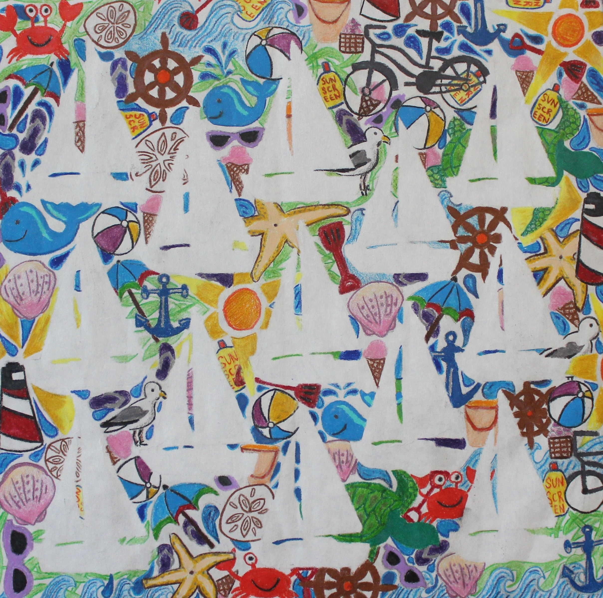

Annie O'Dea
 Observational Drawing of Fruit
Observational Drawing of Fruit
Made with: micron pens
 Observational Drawing of a Glass Mug
Observational Drawing of a Glass Mug
Made with: white charcoal on black paper
 Observational Self-Portrait
Observational Self-Portrait
Made with: black and white charcoal
 Observational Food Drawing
Observational Food Drawing
Made with: oil pastels
Observation Objects in Room
Made with: pencil
 A Textured Piece
A Textured Piece
Made with: colored paper, expo knife

Beach-Themed Piece with Positive and Negative Space
Made with: colored pencil
 “With the Rain”
“With the Rain”
Made with: oil pastels, acrylic paint
 Zoomed-in Perspective
Zoomed-in Perspective
Made with: acrylic paint, gloss medium Painted on canvas